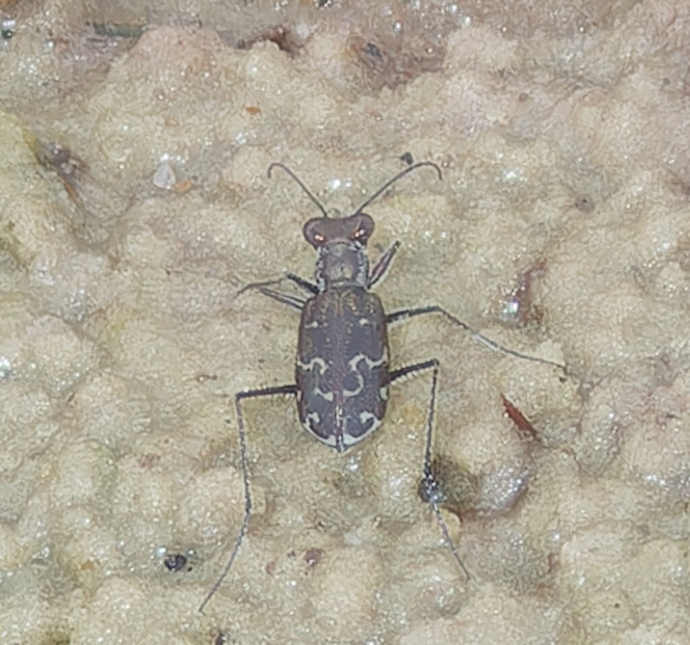

- Tiger beetles are among the fastest running insects on earth relative to body size — and when they sprint at full speed, they actually go temporarily blind. They run so fast that their eyes cannot process images quick enough to track prey, so they stop, reacquire the target, then sprint again.
- This species holds a remarkable long-distance dispersal record: individuals have been collected in light traps on offshore oil platforms in the Gulf of Mexico, more than 160 km from the nearest shoreline — carried out to sea on the wind.
- The larvae are sit-and-wait ambush hunters that live in vertical burrows in the soil. They position their flattened heads flush with the surface like a living trapdoor, then lunge at any small invertebrate that wanders too close — held in place by hooks on their abdomen so they cannot be pulled from the tunnel.
- The sinuous white band across each wing cover that gives this beetle its name traces an S-shape — a reliable field mark that sets it apart from the several other tiger beetle species sharing Florida's coastal wetlands.
A small, slender, long-legged beetle — roughly fingernail-sized. The build is typical of tiger beetles: narrow waist, large head dominated by bulging eyes, and prominently sickle-shaped mandibles. Length approximately ½ to ½ inch.
Dark brown to reddish-brown, with a distinctive sinuous (S-shaped) white or cream band across the middle of each wing cover. This middle band is the key field mark. A shorter curved mark near the tip (apical lunule) is typically also present.
The abdomen is dark brown with a faint metallic sheen — a useful detail noted in the Florida illustrated species key for distinguishing the ascendens subspecies from similar species.
Head is large relative to the body, with large, forward-facing eyes. Legs are long, slender, and pale. The labrum (plate above the mouthparts) is white and carries multiple bristle-like setae.
Several tiger beetle species share Florida's coastal wetlands. The very sinuate (S-shaped) middle elytral band is the most reliable separator for trifasciata ascendens. The Saltmarsh Tiger Beetle (Habroscelimorpha severa) and Margined Tiger Beetle (Ellipsoptera marginata) may share the same mudflat; both differ in overall patterning and coloration.
Tiger beetles are far from acoustically inert. Some species in the broader tiger beetle group produce sounds by stridulation — rubbing the hind femur against the ridged edge of the wing covers — a mechanism that evolved independently multiple times across the family. More remarkable for a park visitor: tiger beetles in the tribe Cicindelini (which includes this species) possess tympanic hearing organs, paired ears located on the first abdominal segment beneath the wing covers. When the beetle is flying and its wing covers are raised, those ears are exposed and capable of detecting ultrasonic bat echolocation pulses. Upon detecting a bat's sonar attack, beetles produce ultrasonic clicks by swinging their wing covers backward to contact the beating hind wings — a response hypothesized to warn bats of the beetle's chemical defenses. The only sound audible to humans is a faint wing-buzz at takeoff.
Look for a small, fast-moving dark beetle sprinting across open, bare, moist ground near coastal margins. The S-shaped white band across the middle of each wing cover is the clinching feature. If the beetle stops and faces you — which it often will before launching into flight — note the oversized eyes and pale, bristled labrum. In flight it appears small and rapid, usually dropping back to the ground surface within a few meters.
Adults are generalist predators, hunting a wide range of small invertebrates — ants, flies, small beetles, and other arthropods that venture across open ground. They pursue prey with rapid sprints, seizing it with large, curved mandibles. Larvae are equally predatory, ambushing small invertebrates from their burrow entrances.
Scan any open, damp, bare-ground surface near the park's wetland edges, particularly along tidal creek margins or exposed muddy banks. Tiger beetles are most visible when they move — look for a small, fast-running beetle sprinting across open ground in short bursts. If you approach slowly and patiently, they will often stop and hold still long enough for a good look before flushing.
Active during warm daylight hours; most conspicuous mid-morning through early afternoon on sunny days. In Florida, the reliable window for adult encounters runs April through October, peaking in late spring and summer when surface temperatures on open mudflats are warmest and invertebrate prey is most abundant. During the hottest part of summer afternoons, adults may retreat to shaded margins.
Observe from a short distance — these beetles are very wary and will flush if approached too quickly. Move slowly and stop when the beetle faces you; it will often hold position long enough for a close look. Avoid picking up or chasing them; repeated flushing is stressful and interrupts foraging. Leave mudflat and marsh-edge substrates undisturbed, as larvae may be present in burrows underfoot.

- © Brice C. (CC-BY-NC), via iNaturalist